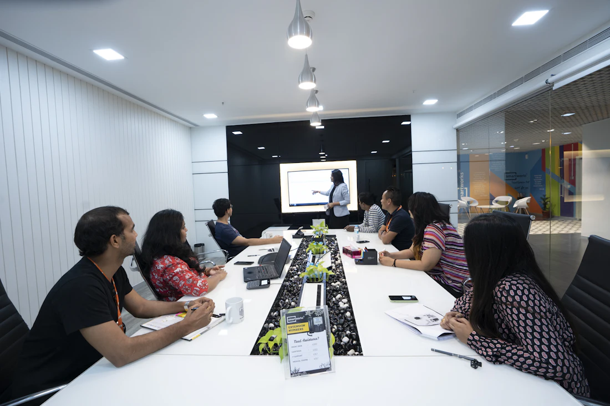

The flight path
The mark is a calligraphic S traced like a flock's flight path: hair-thin where it begins, gathering weight as it turns, and tapering to a beak-like point.
A starling murmuration is thousands of birds moving as a single, fluid shape. That's the promise of Starling: every network, post and conversation your team manages, in one motion. This system keeps that promise consistent, from the smallest badge to the boldest campaign.
The mark is a calligraphic S traced like a flock's flight path: hair-thin where it begins, gathering weight as it turns, and tapering to a beak-like point.
A four-point star floats ahead of the stroke. It's the "star" in Starling, the moment a post takes off, and a quiet nod to the AI at the heart of AllAI Suite.
Starling speaks the AllAI Suite design language, with the same type, crimson brand, rose-to-orange gradient, hairline borders and soft elevation, so it feels at home in the suite.
The lockup pairs the flight-path mark with a lowercase DM Sans Bold wordmark. The tittle on the "i" is replaced with the same four-point star, so the mark and the name share one detail.
Use the full-color lockup on light surfaces and the white lockup on ink or photography. Every file is a true vector with outlined type and needs no font.
The white mark on the signature gradient, with a soft top-left sheen. The mark sits slightly left of center to balance the weight of the star.
Keep a margin of x on every side, where x is the height of the star (about a quarter of the lockup's height). Never set the lockup below 96px wide or the mark below 16px.
The mark carries the brand gradient. Keep it intact, give it room, and set it on calm backgrounds.
Crimson leads and the rose-to-orange gradient is the signature. Slate neutrals do most of the work. Every value is taken from AllAI Suite, and each step shows its live WCAG contrast.
Raw ramps. Components never use these directly; they use the semantic roles below.
Dark mode uses its own stepped values, taken from AllAI Suite's dark tokens, not an inversion. Contrast is measured against each mode's card surface.
The signature gradient is for brand moments: headlines, the logo and active indicators. Buttons with text use the AA-tuned CTA gradient, which starts deeper so white labels clear contrast where they sit.
One family, four weights. Display sizes tighten their tracking and line height (AllAI's hero uses a 1.04 line height). Body text stays at 1.5 or more for comfortable reading.
A 13-step scale. The app UI runs on 14px; marketing body copy is 15–18px. Mobile inputs use 16px so iOS doesn't zoom in.
A 4pt rhythm, an 8px base radius with 16px cards (AllAI's rounded-2xl), a soft five-step elevation scale, and short, purposeful motion.
Cards rest at shadow-sm and lift to shadow-xl on hover. Menus use xl and modals use 2xl.
Micro-interactions take 120–280ms. Entrances ease out and exits ease in, running about 30% faster. Spring easing is only for small confirmations such as toggles, toasts and modals.
UI icons come from Lucide, drawn at a 1.75 stroke on a 24px grid and rendered at 16, 18 or 20px. Network glyphs are the official Simple Icons marks. Emoji are never used as icons.
Always shown on the network's own brand color. Black-mark networks flip to white in dark mode.
Every example below is live and uses the same classes as the app. Hover, focus with the keyboard, and click them.
 JL
+1
JL
+1
Overview: 1.2M impressions across 6 channels this month.

Flow 3.0 is here. AI agents that plan, run and report on your workflows. #Flow3
New comments, DMs and mentions from every channel will land here.
| Post | Channel | Status | |
|---|---|---|---|
| Flow 3.0 launch keynote | Published | 8.4% | |
| Build Week highlights | Published | 6.1% | |
| Pune office tour | TikTok | Scheduled | — |
Analytics is half of Starling. Charts use a fixed categorical order that starts with brand crimson, a single-hue rose ramp for magnitude, and a reserved status set.
Slots are always assigned in order and never cycled. A sixth series folds into "Other". Color follows the entity, so filtering never repaints the remaining series.
Used for heatmaps such as "best time to post". Light steps recede toward the surface. Dark mode uses its own stepped ramp.
Never used for a series. Always shown with an icon and a label.
Last 12 weeks · one axis, one unit
--chart-grid, so data always leads.Social teams work fast and in public. Starling sounds like a steady teammate: it says what happened, what it means, and what to do next.
Plain verbs, specific numbers, no jargon. "Scheduled for Tue 9:30 AM", not "Queued successfully".
When something breaks, stay level, say why, and give the fix in the same breath.
Write like a colleague. Use contractions, use "you", and never blame the user.
Wins are shared. Credit the people and the content, not the tool.
Every component ships with the critical rules from our UI/UX review checklist already in place. These are requirements, not suggestions.